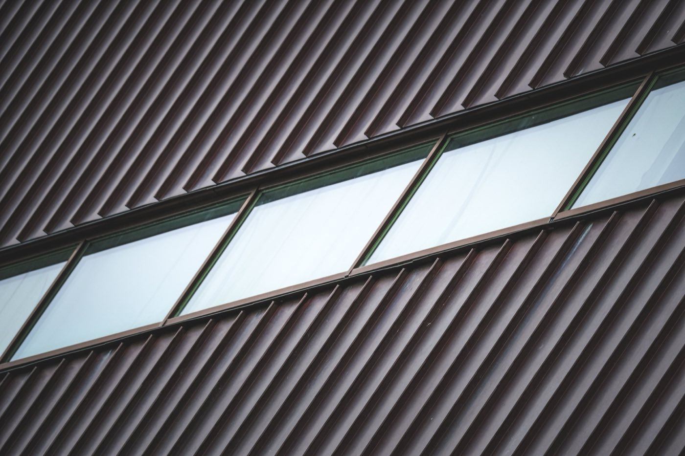

Standing Seam vs Corrugated Metal Roof
Both are metal roofs, but one hides its fasteners and one exposes them. That single detail drives cost, lifespan, and how well each keeps water and wind out.

Both are metal, but they aren't equals. Standing seam hides its fasteners inside raised, interlocking seams, so nothing penetrates the weather surface. Corrugated, and other exposed-fastener panels, screw straight through the face and rely on rubber washers that age. That one difference drives cost, lifespan, and how well each keeps water and wind out.
Key takeaways
- Every exposed screw is a hole in your roof plugged by a rubber washer. Standing seam has none, and that single fact drives everything else.
- Concealed-fastener systems typically handle 20 to 40 mph more uplift than exposed-fastener panels in high-wind areas.
- A "Class 90" sticker is not a spec. It is a pass on one tested assembly at one clip spacing, and plenty of exposed-fastener panels carry it too.
- Plan a washer reset at around year 20 on an exposed-fastener roof. Not a surprise, a maintenance line item.
- Distance to salt water decides your metal. Galvalume warranties commonly stop at 1,500 feet from saltwater. Aluminum usually keeps full coverage.
The comparison
| Factor | Standing seam | Corrugated (exposed fastener) |
|---|---|---|
| Fasteners | 🟢 Hidden in the seams | 🔴 Exposed screws with washers |
| Cost | 🟡 Higher, ~$80–160/m² | 🟢 Cheapest metal, ~$25–60/m² |
| Lifespan | 🟢 40–70 years | 🟡 15–40 years |
| Leak resistance | 🟢 No holes in weather surface | 🟡 Washers age; screws back out |
| Wind / hurricane | 🟢 Best in class | 🟡 Good with correct fastening |
| Install | 🟡 Specialist crew | 🟢 Simple, fast, common |
| Look | 🟢 Sleek, modern | 🟡 Utilitarian |
The core difference
Standing seam hides its clips inside raised, interlocking seams, so nothing penetrates the weather surface. Corrugated and other exposed-fastener panels screw straight through the face, and each screw depends on a rubber washer to stay watertight.

That is genuinely the whole story. Cost, lifespan, leak behavior, wind performance and install difficulty all fall out of it. Standing seam costs more and needs a crew that has done it before. Corrugated is cheap, fast, available everywhere, and asks you to maintain a few hundred small rubber seals for the life of the building.
What a wind rating actually tells you
You will see "UL 580 Class 90" on both kinds of panel, and it sounds decisive. Here's what it means and, more usefully, what it doesn't.
| UL 580 class | Uplift pressure | Roughly equivalent to |
|---|---|---|
| Class 30 | 30 psf | ~73 mph |
| Class 60 | 60 psf | ~103 mph |
| Class 90 | 90 psf | ~126 mph |
To earn Class 90 an assembly has to take 48.5 psf of positive pressure together with 56.5 psf of negative, a 105 psf swing, on a 10-by-10-foot sample, held static for five minutes and then oscillated for an hour.
The part the brochure leaves out
UL 580 is pass or fail. It does not tell you how strong the assembly is, only that it survived over one specific substrate at one specific clip spacing. It does not simulate real storm conditions. ASTM E1592, which uses fluctuating loads, is the closer analogue to an actual hurricane, and UL 1897 continues where 580 stops.
Which is why a common exposed-fastener R-panel and a snap-lock standing seam system can both wear the same Class 90 badge. The rating describes the tested assembly, not the category.
Two things matter more than the badge. First, roof zones: field, perimeter and corner see very different pressures, and a correctly designed roof uses a tighter fastening pattern at the edges and corners. Second, and this is the one that actually kills roofs, failures in high wind are usually installation, not material — wrong fastener spacing, wrong fastener type, not enough penetration depth, or simply not following the tested assembly.
How long do the rubber washers really last?
This is the question that decides whether a corrugated roof is a bargain or a deferred bill, and the answers you'll find range from 15 years to 50. Here is the honest spread:
- Suppliers claim 15 to 20 years of maintained elasticity in direct sun for UV-stabilized EPDM.
- Roofing contractors tend to plan on roughly a 20-year cycle to reset the washers.
- Field reports contradict each other, which is the most honest thing anyone can say about it. One owner replaced failing fasteners on a 20-year-old roof. Another has 32-year-old neoprene washers with no leaks.
Two specifics worth acting on. EPDM beats neoprene for UV and ozone resistance, and in one test showed no signs of aging after 20 years of full exposure under equatorial sun, which is about as relevant a test condition as we could ask for. And there's a second failure mode nobody warns you about: screws backing out. Metal panels expand and contract every single day, and that daily movement works fasteners loose independently of whether the rubber is still good.
Ask your installer one question
"Are you using a clutch-set screw gun?" The washer should end up visibly compressed but not bulging past the metal backing plate. Over-driven crushes the rubber and opens a gap; under-driven never seals. Screws must go in perpendicular, because an angled screw compresses one side and leaves a channel on the other. A drill driver in a hurry is how a new roof leaks in year three.
How close are you to salt water?
If the answer is "close," this section matters more than everything above it.
Airborne salt mist is the real enemy. Settled on metal it behaves as an electrolyte and accelerates corrosion. Galvalume protects itself with a zinc layer that sacrifices itself at cut edges, which works beautifully until the zinc is used up, and salt uses it up fast. Aluminum doesn't play that game: it forms a passive oxide layer and simply resists salt air.
Manufacturers know this exactly, and they write it into the warranty.
The trade is real in both directions: Galvalume typically costs 15 to 25 percent less than equivalent aluminum, has been made since 1972, and underpins most 50-year warranty programs. Substrate warranties generally run 25 to 40 years for Galvalume and 40+ for aluminum.
The question to ask, in writing
Ask the manufacturer's rep, not just your contractor: "What is the exact distance from saltwater that affects my warranty?" Give them the property address. "Near the coast" is not an answer. You need to know whether the line is 1,500 feet, one mile or three, and you need the Proximity to the Ocean clause in both the substrate and the paint warranty.
And remember the rest of the assembly. Fasteners and clips need to be stainless or coated grades that won't corrode against aluminum, and the edge metal is the most salt-exposed piece on the whole roof, so it should match the panel metallurgy rather than whatever was in the truck.
Which fits your project
- Go standing seam for a permanent home, coastal exposure, or a sleek look. It removes the washer problem entirely, which is the single best thing you can do for a roof you plan to keep.
- Go corrugated on a budget or a fast build, with a quality coating, real insulation, EPDM washers and a clutch-set gun. Then diary the fastener check.
- Near salt, specify aluminum and get the warranty distance in writing before you order anything.
The tropical reality
Both work here. The choice is budget and time horizon. On the coast, standing seam in aluminum is the safest long-term bet against salt and storms, and it is the one roof we rarely see anyone regret. Inland and on a budget, a well-installed corrugated roof with a good coating is genuinely fine and a fraction of the price.
Either way: insulate. Bare metal over open purlins is hot, and in a Panamanian downpour it is loud enough to end a conversation. See the roofing materials guide for the full material set, flat vs pitched for the slope question, and the 2026 Panama build cost guide for what any of it does to a budget.
Building in Panama or Costa Rica?
SORA builds fixed-price homes for foreign buyers in Panama and Costa Rica. We match the method and material to your site, budget, and how long you plan to keep the house, and tell you straight when the cheaper option is the smarter one.
See 2026 build costs →Frequently asked questions
Is standing seam or corrugated metal roofing better?
Standing seam is better for a permanent home. Its hidden fasteners make it more leak- and wind-resistant and it lasts 40 to 70 years. Corrugated (exposed-fastener) metal is much cheaper and faster and is a solid budget choice, but its exposed screws need periodic maintenance and it typically lasts less long.
Why is standing seam more expensive?
It uses more material, precise roll-forming, and a skilled crew to hide the fasteners inside interlocking seams. That labor and engineering buys a longer-lived, more weather-tight roof with no exposed screws to age or leak.
Do exposed-fastener metal roofs leak?
They can over time. Each screw seals against a rubber washer that eventually dries and shrinks, so exposed-fastener roofs may need re-sealing or re-screwing after some years. Standing seam avoids the issue by hiding fasteners entirely.
How long do the rubber washers on a corrugated roof last?
Plan on a reset around year 20. Suppliers claim 15 to 20 years for UV-stabilized EPDM, contractors budget about the same, and field reports range from 20 to over 30 years. EPDM handles UV and heat better than neoprene, which matters in the tropics.
Does a Class 90 wind rating mean the roof is hurricane-proof?
No. UL 580 is a pass or fail test on one specific assembly at one clip spacing, and it does not simulate real storm conditions. Exposed-fastener panels carry the same rating as standing seam. Installation quality and zone-specific fastening matter far more.
Galvalume or aluminum near the ocean?
Aluminum, if you are close. Galvalume warranties commonly stop applying within 1,500 feet of saltwater and some within a mile or two. Aluminum forms a passive oxide layer and usually keeps full coverage. Ask the manufacturer for the exact distance in writing.
Sources & verification
Figures in this guide were checked against primary and authoritative sources on 13 September 2026. Warranty terms, codes and costs vary by manufacturer and change over time — always confirm current figures in writing before ordering.
- MBCI — wind uplift testing for standing seam systems
- BNP Media CE Center — testing and specifying metal roofs in high-wind areas
- McElroy Metal — metal roofing in coastal areas
- Mid Florida Metal Roofing Supply — EPDM vs neoprene washers
- Gulf Coast Metal Roof Guide — coastal warranty proximity clauses